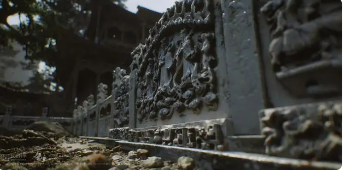
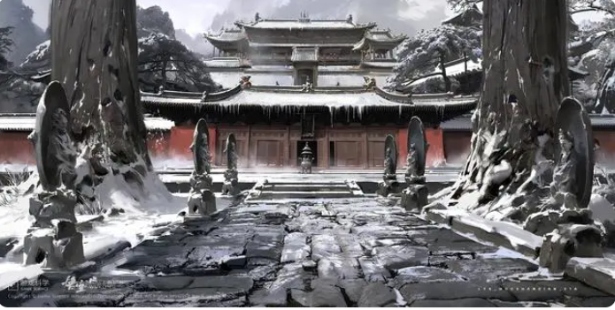
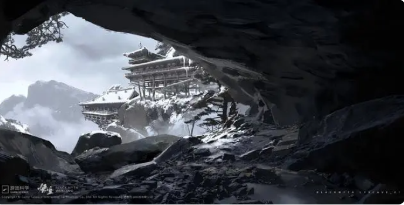

黑神话悟空游戏场景与现实取景地
黑神话悟空作为一款国产游戏也是融入了很多的中国文化，下面是有关于黑神话悟空游戏内的现实取景地
一、五台山
五台山位于山西省忻州市五台县东北部,
是中国四大佛教名山之首，也是世界五大佛教圣地之一。

二、崇福寺
崇福寺，古名林衙院，位于山西省朔州市朔城区东大街北侧，
建于唐高宗麟德二年,是一座殿阁群居的古寺庙.
三、悬空寺
悬空寺位于山西省浑源县恒山金龙峡西侧翠屏峰的峭壁间，
素有“悬空寺，半天高，三根马尾空中吊”的俚语是中国仅存的佛、道、儒三教合一的独特寺庙。